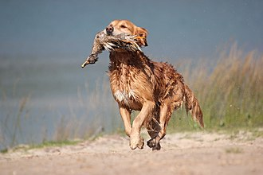
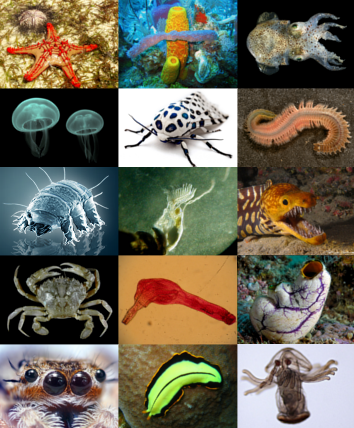

Це песик

Страшно

Це кролик
Твари́ни (лат. Animalia або Metazoa) — царство переважно багатоклітинних еукаріотичних (ядерних) створінь, однією з найголовніших ознак якого є гетеротрофність (тобто, споживання готових органічних речовин) та здатність діяльно рухатись. До царства тварин не належать рослини та гриби — теж великі (але не єдині) царства еукаріотів. Втім, існує чимало тварин, що ведуть нерухомий спосіб життя, а гетеротрофність властива також грибам і деяким рослинам-паразитам. У клітинах тварин (як і інших еукаріотів) міститься утворене ядро. У побуті, під словом «тварини» часто розуміють лише чотириногих наземних хребетних (ссавці, плазуни та земноводні). У науці за терміном «тварини» (Animalia), закріплено ширше значення (див. вище). Тому кажуть, що до тварин, крім ссавців, належить багато інших істот: риби, птахи, комахи, павукоподібні, молюски, морські зірки, черви тощо. Людина теж належить до царства тварин, але зазвичай розглядається окремо — навіть професійні біологи вживають звороти «тварини і людина» чи «тварини, зокрема людина». Водночас, раніше до цього царства відносили багатьох гетеротрофних найпростіших і ділили тварин на підцарства: одноклітинні Protozoa і багатоклітинні Metazoa. Зараз назва «тварини» в таксономічному сенсі закріпилася за багатоклітинними. В такому розумінні, тварини як таксон мають певніші ознаки — для них притаманні оогамія, багатотканинна будова, наявність щонайменше двох зародкових листків, стадій бластули і гаструли в зародковому розвитку. У переважної більшості тварин є м'язи і нерви (за винятком губок, пластинчастих, мезозоїв, кнідоспоридій, які, можливо, їх втратили). Водночас у науці, термін «тварини» іноді пропонується використовувати в ще ширшому значенні, маючи на увазі під тваринами не таксон, а спосіб організації — життєву форму, засновану на рухливості, гетеротрофності і голозойному живленні.